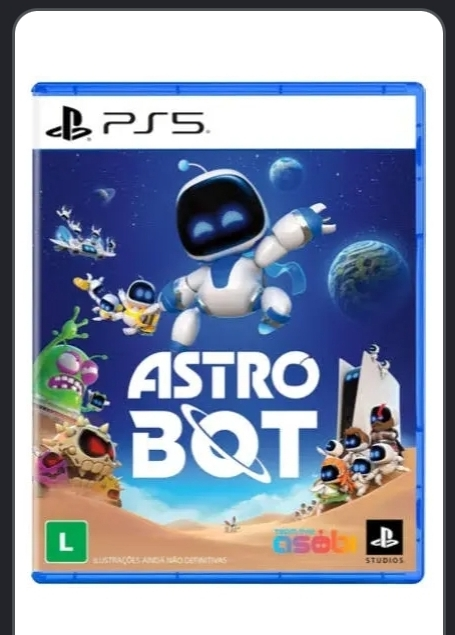

Uma das maiores mudanças da história do PlayStation foi confirmada pela Sony. A empresa anunciou que, a partir de janeiro de 2028, os novos jogos lançados para os consoles PlayStation serão distribuídos apenas em formato digital. A decisão marca uma nova fase da indústria e mostra como o mercado de games está mudando rapidamente.
Segundo a Sony, o principal motivo para essa mudança é o crescimento das compras digitais. Nos últimos anos, milhões de jogadores passaram a adquirir seus jogos diretamente pela PlayStation Store, sem precisar comprar discos em lojas físicas. Além disso, serviços de assinatura e downloads digitais se tornaram cada vez mais populares.
A mudança não significa que todos os discos deixarão de existir imediatamente. Jogos lançados antes de 2028 continuarão disponíveis em mídia física, e muitos deles ainda poderão ser comprados normalmente.
O impacto será sentido principalmente nos novos lançamentos. Depois da data anunciada, os próximos jogos chegarão apenas em versão digital, exigindo conexão com a internet para download.
A notícia gerou opiniões diferentes entre os jogadores.
Quem prefere o formato digital acredita que ele é mais prático, já que permite comprar e baixar jogos sem sair de casa, trocar de console sem carregar discos e aproveitar promoções nas lojas online.
Por outro lado, muitos fãs criticaram a decisão. Colecionadores afirmam que os discos fazem parte da história dos videogames e permitem montar coleções, emprestar jogos para amigos e até revendê-los depois de terminar a campanha.
Outro ponto levantado pelos jogadores é a preservação dos games. Algumas pessoas demonstraram preocupação com o futuro de títulos que dependem exclusivamente das lojas digitais, já que um jogo pode deixar de ser vendido caso seja removido dessas plataformas.
A decisão da Sony reforça uma tendência que já vinha acontecendo há alguns anos. Cada vez mais empresas investem em distribuição digital, assinaturas e armazenamento em nuvem.
Mesmo assim, muitos especialistas acreditam que ainda existe espaço para a mídia física entre colecionadores e jogadores que valorizam possuir uma cópia do jogo.
Independentemente da preferência de cada pessoa, o anúncio mostra que a forma de comprar videogames está mudando. Nos próximos anos, o formato digital deve ganhar ainda mais força e transformar definitivamente a maneira como os jogadores adquirem seus jogos.
Você prefere comprar jogos em mídia física ou digital? Conte sua opinião e compartilhe esta matéria com outros jogadores.